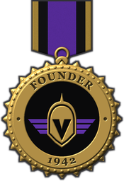
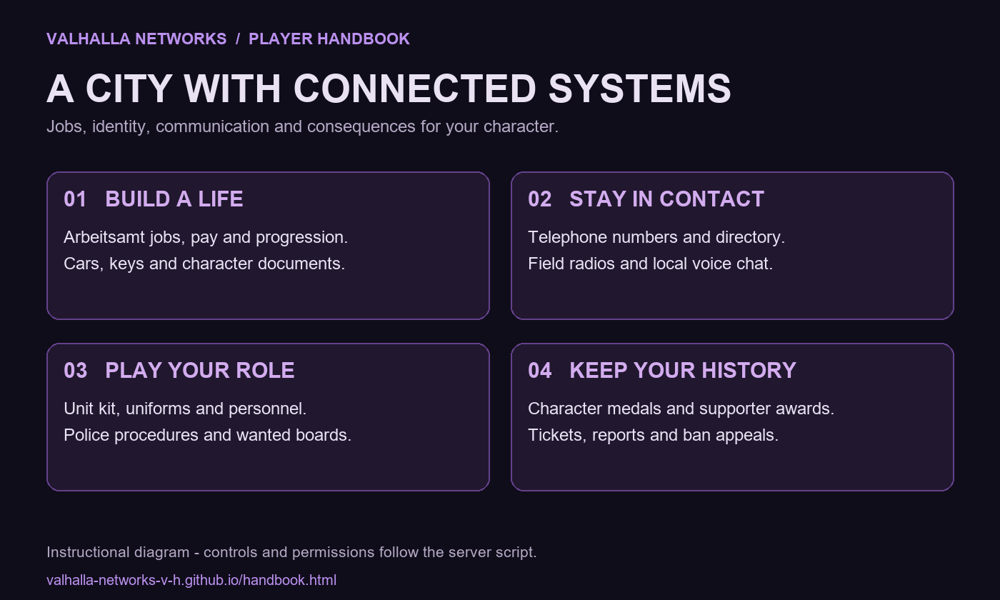
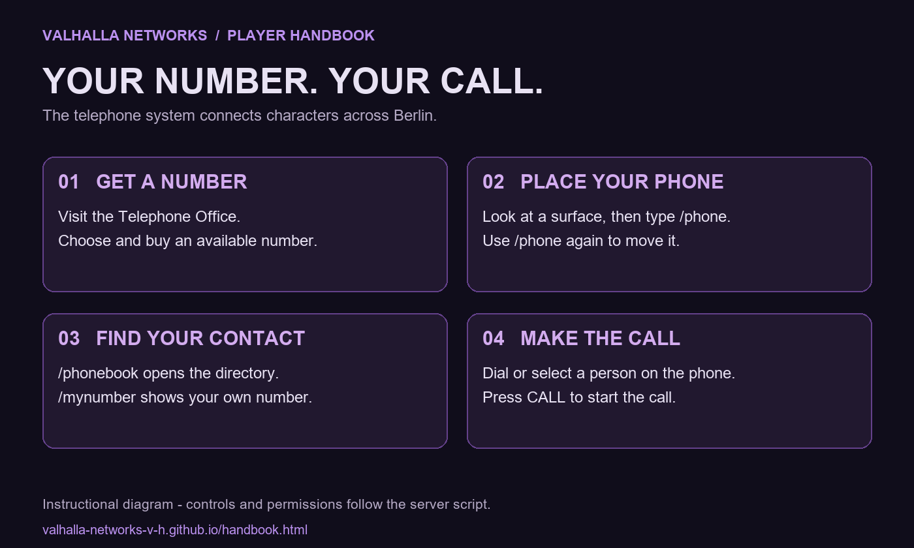
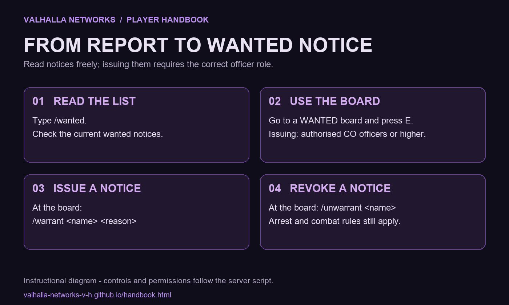

Founder Support · Your medal, in game

Become a founding supporter
Permanent Founder Medal on every character — visible in your medal case and above your character name.
$49 USD · Cosmetic supporter award
This is the actual in-game medal. VIP and vehicle flags are separate packages.
View Founder packageTebex test payments are currently active. Real purchases await store approval.
Player Handbook Systems, controls and commands
Practical instructions from the current Valhalla server script. The diagrams explain workflows; they are not gameplay screenshots. Press F1 in game for Rules and Handbook.

Founder Medal
- Support Valhalla with the $49 Founder Medal package. The picture below is the actual in-game medal asset, not a concept image.
- The permanent Founder perk is linked to your Steam account. The medal appears on every character, in /medals and above your character name.
- This package is a cosmetic supporter award. It does not grant staff authority, a faction rank, VIP or vehicle flags.
- Check delivery with /perks. The shop currently uses Tebex test payments; real purchases become available after store approval.
Getting started
- You start as a citizen of Berlin. The Arbeitsamt at the station offers work: delivery driver, postman, road repairs.
- Pay arrives every 10 minutes, plus a daily login bonus that grows with your streak and service XP for active play. /top shows the roll of honour.
- Factions (Wehrmacht, SS, police, party ...) are assigned by staff through the personnel office.
- C toggles the over-the-shoulder view. Right click with a weapon aims in first person.
Weapons and kit
- Quartermaster of your unit: buy weapons (pistols 80 RM, rifles 100 RM) and magazines, sign out service weapons, free rearm of service kit.
- Lockers: uniform by rank, insignia and equipment.
- E + R: safety on/off. Shift + E + R: fire mode.
Police and state
- Controls: X - voice chat (about 11 m range). C - thirdperson on/off. I - weapon inspect and attachments. Hold T - gesture wheel (Oath, Valhalla and Honour Salute, Salute, Bow, Wave ...), release on a gesture. Other key: valhalla_gesture_key in the console.
- Staff: left click with the admin stick opens the mod menu (player file, teleport, warn, jail, kick, ban, medals, tickets). /modmenu works too.
- @ text - open a ticket for the staff team. Staff: ticket cards top right with CLAIM, GOTO, BRING, BACK, CLOSE - F3 shows the mouse, /sits lists all tickets.
- /showid or /showpapers id - show your ID card to the person you look at. /showpapers f - driving licence, w - military pass, s - service ID. /papers - all your papers.
- /showdisc - Gestapo and Kriminalpolizei hold up their Dienstmarke (warrant disc).
- /checkid - check papers (police, SS, Feldgendarmerie ...). Restrained people cannot refuse.
- /search - search a restrained person, confiscate weapons and drugs.
- /jail <minutes> [reason] - jail a restrained person. /unjail <name>, /jailtime.
- /wanted - read the wanted list. Officers (CO or higher) of the Ordnungspolizei, the RSHA and the Ministry of the Interior issue and revoke notices at a WANTED board (E), or there with /warrant <name> <reason> and /unwarrant <name>.
- Quartermaster: besides weapons and ammunition he issues a field radio and restraints (EQUIPMENT). Civilians get a radio only on the black market.
Vehicles
- Car dealer at the station square: buy cars, take them out of the garage, sell them back (60 %).
- Only the owner can drive. /carkeys <name> gives a spare key. /carinfo shows the owner.
- Units get service vehicles from the motor pool for free.
Spielbank Berlin
- Slot machines with a progressive jackpot (E: spin, ALT + E: change bet).
- Wheel of fortune: one free spin every day.
- Roulette: 25 seconds to bet, numbers pay 35:1, dozens 2:1, even chances 1:1.
- VIP levels by total wagered (Bronze to Diamond) add up to +10 % on every win. /casinotop shows the leaderboard.
Roleplay
- /broadcast <text> - announcement on the Reichsrundfunk (party, chancellery, ministry).
- /anim 1-10: parade rest, arms crossed, hands up, military salute, wave, nod, halt, point, beckon, fist on chest. /anim 0 stops.
- Faction doors open for members with E and lock again behind them. Cell switches only work for the owning faction.
- Telephone: buy a number at the Telephone Office, then /phone puts your telephone where you look (again: it moves). /phonebook - all numbers, players online first with their faction. Dial on the phone or click a name in its list, then CALL.
- Notes, books, cooking, farming and fishing work through items.
Music and credits
- /music turns the menu music on or off.
- Loading music: "Alte Kameraden" (Carl Teike), historic record, public domain. Menu music: "Der Königgrätzer Marsch", recording from 1939, public domain.
Staff
- /pa [name] - personnel office: faction, rank and uniform in one step. /assign <name> <faction> [en|nco|co|go].
- Right click in the scoreboard: personnel file. Staff characters get the admin stick.
- /placesave stores placements. /airraid starts or ends an air raid.
Telephone: step by step

- 1. Visit the Telephone Office and buy an available number. Short numbers cost more; read the displayed in-game price before confirming.
- 2. Look at a suitable surface and type /phone to place your telephone. Use /phone again to move it.
- 3. Use /mynumber to check your number, or /phonebook to open the directory. Online players appear first, with their faction.
- 4. Use the telephone, dial a number or choose a person from the list, then press CALL.
- 5. /removephone removes your placed telephone. Numbers belong to the character.
Wanted board: step by step

- 1. Type /wanted to read current notices.
- 2. Officers (CO or higher) in the Ordnungspolizei, RSHA or Ministry of the Interior may issue and revoke notices.
- 3. Stand at a WANTED board and press E to use it.
- 4. At the board, /warrant <name> <reason> issues a notice; /unwarrant <name> revokes it.
- 5. Give an actual roleplay reason. A wanted notice does not replace the server rules for searches, arrests or combat.
Medals and character identity
- /medals opens your medal case. Awarded medals also appear above the character name.
- Authorised staff and faction command award eligible medals through /medal or the personnel/moderation menus. Some medals are staff-only.
- The Founder Medal uses its own supporter entitlement; buying it does not unlock restricted faction medals.
Store, VIP and delivery
- VIP Member: $30 permanent, without Q-menu vehicle flags. The VIP & Vehicle Flags bundle costs $39.
- VIP includes +10,000 RM on the active character, four character slots, PET, Luftwaffe/Kriegsmarine access, VIP tools, premium dealer access, +25% pay, VIP tag and reserved slot.
- Sign in through Steam in the shop. Automatic perks are linked to that Steam account; inspect them with /perks.
- Custom character, locked storage, custom model and custom medal orders require staff fulfilment.
- Do not pay for a test checkout. The live store still requires Tebex approval.
Community and help
- Main Discord: https://discord.gg/CpsxKb5VjT
- Forum: https://valhalla-networks.infinityfree.io/forum/
- Ban appeals: https://valhalla-networks.infinityfree.io/forum/forumdisplay.php?fid=46
- Use @ followed by your message in game to request staff help. Include what happened and relevant evidence.